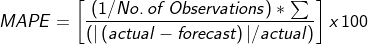
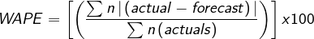
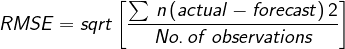
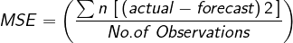
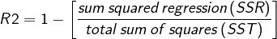

Extrapolation
But :Permettre aux utilisateurs de créer une prévision en identifiant les tendances et les saisons à partir des données historiques chronologiques de séries saisies par l'utilisateur dans l' 'Saisie de données et ajustement' écran. Plusieurs options d'extrapolation statistique sont disponibles et seront décrites ci-dessous. Les extrapolations à partir des données de consommation sont réalisées par unité de planification.
Utilisation de cet écran:
1.Débuter l'extrapolation:
- Avant d'utiliser cet écran, assurez-vous d'avoir terminé l' 'Saisie de données et
ajustement' écran pour chaque unité de planification et région que vous souhaitez
extrapoler
- Utilisez les filtres en haut de cet écran pour sélectionner l'unité de planification, la région à extrapoler et la plage de dates pour les données historiques à utiliser.
- L'utilisateur peut sélectionner une ou plusieurs des méthodes d'extrapolation disponibles dans QAT, en fonction du modèle général de consommation et des données disponibles, comme cela sera expliqué ci-dessous. Voir les sections 2 à 4 ci-dessous pour une explication des méthodes d'extrapolation et comment choisir au mieux les méthodes pour votre prévision.
- Notez que les modifications apportées à cet écran sont facultatives - QAT applique automatiquement les paramètres d'extrapolation par défaut à toutes les unités de planification une fois l'écran Ajustements terminé. L'utilisateur effectue ensuite la sélection finale des prévisions dans le 'Comparaison et sélection des prévisions' screen.
2.Méthodes d'extrapolation disponibles
dans QAT
Les méthodes de prévision dans QAT sont organisées du plus simple au plus
sophistiqué.
- Moyenne mobile: La moyenne mobile est une moyenne qui évolue dans le temps,
supprimant les données plus anciennes à mesure qu'elle intègre des données plus
récentes. Pour que QAT calcule la moyenne mobile, entrez le nombre de mois
passés que vous souhaitez utiliser dans le calcul de la moyenne. L'utilisateur peut
sélectionner nimporte quel nombre entier positif pour ce champ. Entrer 5,
par exemple, signifierait que la projection pour le mois suivant dans la série
serait la moyenne des cinq mois précédents. Cette méthode est particulièrement
utile pour les prévisions à court terme et est sensible aux tendances. Elle n'est
pas appropriée pour les données saisonnières
- Semi-moyennes:Tendances d’estimations semi-moyennes basées sur deux moitiés d’une série.
QAT divise les données réelles en deux parties égales (moitiés), mais si les données de
consommation réelles ne concernent pas les mois pairs, le point médian est exclu et la
moyenne arithmétique des valeurs de chaque partie (moitié) est calculée comme les valeurs
y de deux. points sur une ligne. La pente de la ligne de tendance est déterminée par
la différence entre ces valeurs y au fil du temps, définie par la différence des milieux
des deux moitiés de la série, ou valeurs x, des points. Cette méthode est sensible
aux tendances et utile pour les prévisions à court et moyen terme mais n'est pas appropriée
pour les données saisonnières.
- Régression linéaire: La régression linéaire modélise la relation entre deux
variables en ajustant une équation linéaire aux données observées. Intervalle de
confiance : entre 78 % et 99 % (exclusif), par exemple, un niveau de confiance de
90 % indique que 90 % des points futurs possibles doivent se situer dans ce rayon
de prédiction représenté par la droite de régression. Cette méthode nest pas
appropriée pour les données saisonnières.
- Lissage exponentiel triple (Holt-Winters): Dans les statistiques, différents
types de lissage sont utilisés pour filtrer le bruit afin que nous puissions voir plus
clairement les modèles dans un ensemble de données de séries chronologiques. Le lissage
exponentiel utilise des données plus anciennes à des poids décroissants de manière
exponentielle au fil du temps. Les paramètres de lissage dans le lissage exponentiel
sont définis entre 0 et 1, les valeurs proches de 1 favorisant les valeurs récentes
et les valeurs proches de 0 favorisant les valeurs plus anciennes. Les utilisateurs
utilisant le triple lissage exponentiel peuvent choisir parmi quatre paramètres :
- alpha, s'applique au niveau ou à la ligne de base de l'ensemble de données. Des valeurs alpha plus élevées donnent plus de poids aux données les plus récentes
- bêta, détermine à quel point les tendances récentes doivent être évaluées par rapport aux tendances plus anciennes
- gamma, reflète la composante saisonnière de la prévision. Saisonnier se réfère généralement à des modèles répétitifs au cours d'une année. Plus le gamma est élevé, plus le poids sera appliqué à la composante saisonnière la plus récente des données.
- Saisonnalité: Dans QAT, une saison peut être décrite comme la durée attendue
(en mois) de tout schéma répétitif dans la consommation
- Intervalle de confiance: entre 78 % et 99 % (exclusif), par exemple, un niveau
de confiance de 90 % indique que 90 % des points futurs doivent se situer dans ce
rayon de prédiction.
- ARIMA: La modélisation ARIMA permet d'intégrer et d'appliquer deux modèles
statistiques conçus pour des séries chronologiques stationnaires à intégrer à des
séries chronologiques non stationnaires, c'est-à-dire des séries chronologiques qui
ont des tendances ou des saisons. Elle est souvent appliquée aux prévisions à court
terme. Auto-régressif signifie que chaque point de la régression est influencé par
ses valeurs précédentes et moyenne mobile implique que chaque point est une moyenne,
une combinaison linéaire d'un ou plusieurs points adjacents. L'auto-régression et
la moyenne mobile sont intégrées ensemble pour ajuster un meilleur modèle pour la
série par différenciation, ou littéralement en utilisant la différence entre les
points dune série chronologique pour lanalyse au lieu des valeurs brutes. Les
modèles ARIMA ont trois paramètres:
- p ou AR (ordre de décalage): le nombre dobservations de décalage dans le modèle
- d ou I (degré de différenciation): le nombre de fois que les observations brutes sont
différenciées. Cette valeur est normalement 1 (sil y a une tendance) ou 0 (pas de tendance).
Autres valeurs plus élevées sont possibles mais pas attendues.
- q ou MA (ordre de la moyenne mobile): la taille de la fenêtre de moyenne mobile ou le
nombre dobservations différenciées à moyenner.
- Les valeurs par défaut de QAT pour les paramètres ARIMA sont p = 0, d = 1, q = 1.
- Intervalle de confiance : entre 0% et 100% (exclusif) ex. Un niveau de confiance de
90 % indique que 90 % des points futurs doivent se situer dans ce rayon de prédiction.
3.Quelle méthode d'extrapolation dois-je utiliser ?
Vous trouverez ci-dessous quelques considérations pour choisir une
méthode de prévision. Les méthodes de prévision dans QAT sont organisées du plus simple
au plus sophistiqué. En général,
- Les modèles les plus sophistiqués sont plus
sensibles à la qualité des données
- Si vous avez des données de faible qualité (données manquantes, taux de rapportage
variables, 12 mois de données),
des méthodes de prévision plus simples sont recommandées
Le choix de la méthode d'extrapolation dépend du modèle attendu dans
les données. Certains modèles typiques incluent:
- Stationnaire, où la plage des valeurs observées dans le temps oscille autour
d'une moyenne. Les modèles appliqués à ces ensembles de données peuvent inclure
- Tendance sans composante saisonnière, où les valeurs observées ont une
tendance à la hausse ou à la baisse. Les modèles appliqués à ces ensembles
de données peuvent inclure
- Semi-moyenne
- Régression linéaire
- Tendance et Saisonalité, où les valeurs observées dans une plage de données ont
à la fois des composantes de tendance et de saisonalité. Les modèles appliqués
à ces ensembles de données peuvent inclure
- Modèle ARIMA saisonnier
- Lissage triple exponentiel (Holt-Winters)
-
Saisonnier sans tendance,
où les valeurs observées ont une composante saisonnière mais pas de tendance. Des modèles
appliqués à ces ensembles de données peuvent inclure
- Lissage triple exponentiel (Holt-Winters)
Les modèles proposés ici
ne sont ni exhaustives ni exclusives. QAT permet à l'utilisateur de postuler
une variété de méthodes d'extrapolation, puis de les comparer en utilisant les meilleures
métriques d'ajustement ou d'erreur de prévision.
La deuxième étape consiste à déterminer si les valeurs de prévision sont
censées refléter fidèlement les modèles historiques de vos données et si vous
utiliserez les mesures d'erreur pour éclairer votre sélection. Cependant,
lorsque vous choisissez de ne pas tenir compte de la mesure d'erreur,
il sera important de documenter votre argumentaire pour éclairer les
discussions ou les révisions de vos prévisions et pour aider les futurs
prévisionnistes à étayer leurs décisions.
4.Comment interpréter les erreurs ?
QAT calcule automatiquement les métriques d'erreur de prévision à l'aide
de plusieurs méthodes. Ceux-ci inclus:
- MAPE (pourcentage d'erreur absolu moyen) : peut être interprété comme le pourcentage moyen
différence entre les prédictions et leurs cibles prévues dans l'ensemble de données. Par exemple, si
MAPE est de 15 % alors vos prédictions sont en moyenne à 15 % des valeurs réelles.

- WAPE (pourcentage d'erreur absolu pondéré): WAPE est une mesure appropriée lorsque le
L'ensemble de données utilisé a des valeurs faibles ou intermittentes. Un pourcentage WAPE de 5 signifie que le
les prévisions étaient erronées de 5 % sur l'ensemble des données pour une certaine période d'évaluation. Selon
Selon le cas d'utilisation, il est recommandé de choisir un modèle qui donne le moins de valeur WAPE.

- RMSE (erreur quadratique moyenne): RMSE peut être interprété comme l'erreur moyenne que le
Les prédictions du modèle sont par rapport à la réalité, avec un poids supplémentaire ajouté à des valeurs plus grandes.
erreurs de prédiction. Généralement, plus le RMSE est proche de zéro, plus le modèle est précis.

- MSE (erreur quadratique moyenne): MSE est la moyenne agrégée de la différence au carré entre
les faits et les prévisions. Les erreurs importantes sont mises en évidence à cause de cette quadrature. MSE est utile
lorsque vous travaillez sur des modèles où les erreurs occasionnelles importantes doivent être minimisées. Généralement, le
plus il est proche de 0, plus le modèle est précis.

- R 2 (la corrélation carrée entre la variable dépendante et les valeurs ajustées):
R 2 = 1 - [régression somme carrée (SSR) / somme totale des carrés (SST)], où la somme
le carré des résidus pour la régression (SSR) est la somme de ses résidus au carré, et le
la somme totale des carrés (SST) est la somme de la distance entre les données et la moyenne, tous
au carré. La valeur R 2 est toujours un nombre compris entre 0 et 1. R 2 est une mesure de l'ajustement d'un
droite de régression vers une série d'observations historiques avec des valeurs plus proches de 1 indiquant un
correspondance plus forte entre les valeurs réelles et prédites (modèle de régression). C'est
il ne s'agit pas d'une mesure d'erreur et ne doit pas être utilisé en soi pour évaluer la pertinence d'une prédiction,
mais en combinaison avec d'autres mesures d'erreur et la connaissance du programme par l'utilisateur.

Hormis R 2, plus le score est faible, plus le résultat de la méthode de prévision correspond à l'historique.
données. Dans les modèles où les tendances historiques d'un ensemble de données devraient se refléter dans le futur
valeurs, une valeur d'erreur faible pourrait être utilisée pour aider à sélectionner une méthode d'extrapolation préférée, et QAT
mettra en évidence ces meilleurs ajustements dans un tableau. Toutefois, si des changements substantiels qui ne correspondent pas au contexte historique
Si les données sont anticipées, l'extrapolation la mieux adaptée n'est peut-être pas la prévision la plus appropriée à sélectionner.
Pour faire la meilleure sélection entre les méthodes d'extrapolation pour
votre objectif, la chose la plus importante est d'abord de comprendre
quelle méthode d'extrapolation est la plus appropriée pour le modèle
attendu dans les données. Les méthodes de prévision dans QAT sont
organisées de la plus simple à la plus sophistiquée. En général,
- Les modèles plus sophistiqués sont plus sensibles aux problèmes
de qualité des données
- Si vous avez des données de faible qualité (données manquantes,
taux de rapportage variables, 12 mois de
données), des méthodes de prévision plus simples sont recommandées
La deuxième
étape consiste à déterminer si les valeurs de prévision sont censées refléter fidèlement
les modèles historiques de vos données et si vous utiliserez les mesures d'erreur pour
éclairer votre sélection. Cependant, lorsque vous choisissez de ne pas tenir compte de
la mesure d'erreur, il sera important de documenter votre argumentaire pour éclairer
les discussions ou les révisions de vos prévisions et pour aider les futurs prévisionnistes
à étayer leurs décisions.
Note : Vous avez 0 mois de données sur la consommation réelle. Les valeurs minimales nécessaires pour les différentes fonctionnalités sont ci-dessous:
* LET, Holt-Winters: Au moins 24 mois de données de consommation réelle
* ARIMA: Au moins 14 mois de données de consommation réelle
* Moyenne mobile, semi-moyennes et régression linéaire: Au moins 3 mois de données de consommation réelle
|